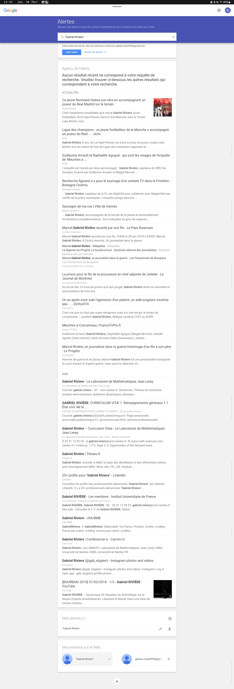

Veille technologique : les logiciels libres pour linux
Résumé rapide : Les logiciels libres pour Linux connaissent une forte dynamique, avec des outils de veille technologique basés sur l’open source, l’auto‑hébergement et la sécurité. Les solutions comme Shaarli, FreshRSS ou des plateformes collaboratives permettent de suivre efficacement l’évolution des projets et des vulnérabilités Net-Security LinuxFr.org journalduhacker.net.
Montée en puissance des outils auto‑hébergeables : Beaucoup de professionnels privilégient des solutions qu’ils peuvent installer eux‑mêmes pour garder le contrôle sur leurs données. Exemples : Shaarli (gestion de liens), FreshRSS (lecteur RSS libre) Net-Security.
Focus sur la sécurité : La veille technologique dans l’IT et la cybersécurité repose sur des logiciels libres capables de suivre les vulnérabilités. Certains projets comme OpenCVE permettent de surveiller les failles, même si leur licence n’est pas toujours considérée comme pleinement libre LinuxFr.org.
Interopérabilité et personnalisation : Les logiciels libres offrent une flexibilité pour s’intégrer dans des environnements Linux variés, que ce soit pour le développement, l’administration système ou la recherche.
Shaarli : gestionnaire de bookmarks minimaliste et libre, utile pour stocker et partager des liens.
FreshRSS : agrégateur RSS open source, permettant de centraliser les flux d’actualités technologiques.
Wallabag : outil libre pour sauvegarder et lire des articles hors ligne.
Nextcloud + plugins : plateforme collaborative libre qui peut être enrichie pour la veille documentaire.
Share-links (Django/Python) : solution développée par la communauté pour partager des ressources journalduhacker.net.
Souveraineté numérique : L’usage de logiciels libres sur Linux permet d’éviter la dépendance aux solutions propriétaires.
Communauté active : Les projets libres évoluent rapidement grâce aux contributions de développeurs et d’utilisateurs.
Durabilité : Les logiciels libres sont souvent pérennes, car leur code est ouvert et peut être repris même si le projet initial s’arrête.
Automatisation de la veille : intégration d’outils libres avec des scripts Linux pour automatiser la collecte et l’analyse de données.
IA et open source : émergence de projets libres intégrant l’intelligence artificielle pour améliorer la pertinence des informations surveillées.
Collaboration accrue : plateformes libres favorisant le partage de connaissances entre équipes et communautés.
👉 En résumé, la veille technologique sur Linux s’appuie sur un écosystème riche de logiciels libres qui garantissent sécurité, autonomie et flexibilité. Pour une stratégie efficace, il est recommandé de combiner plusieurs outils (RSS, bookmarking, partage collaboratif) afin de couvrir l’ensemble des sources pertinentes.
Sources : Net-SecurityNet-Security LinuxFr.orgLinuxFr.org journalduhacker.netJournal du hacker
Vous pouvez aussi utiliser Google Alertes comme outil pour la veille :
Gratuit et simple : il suffit de définir des mots‑clés (ex. logiciels libres Linux, sécurité open source).
Automatisation : vous recevez directement par email les nouvelles publications correspondant à vos critères.
Large couverture : Google indexe une grande partie du web, ce qui permet de ne pas manquer d’informations importantes.
Pas open source : contrairement à des outils comme FreshRSS ou Shaarli, vous ne contrôlez pas le code ni vos données.
Dépendance à Google : les résultats sont filtrés par l’algorithme de Google, donc pas toujours exhaustifs.
Moins personnalisable : difficile d’intégrer Alertes dans un workflow Linux automatisé sans passer par des scripts ou des redirections d’emails.
Beaucoup de professionnels combinent Google Alertes avec des outils libres :
Envoyer les alertes vers une boîte mail, puis les récupérer avec Thunderbird (client libre).
Intégrer les flux RSS de Google Alertes (possible via une petite manipulation) dans FreshRSS pour centraliser la veille.
👉 Donc oui, vous pouvez l’utiliser, mais pour une veille technologique orientée logiciels libres sur Linux, il est souvent plus cohérent de compléter Google Alertes par des outils open source afin de garder la maîtrise de tes données et d’automatiser votre suivi.
